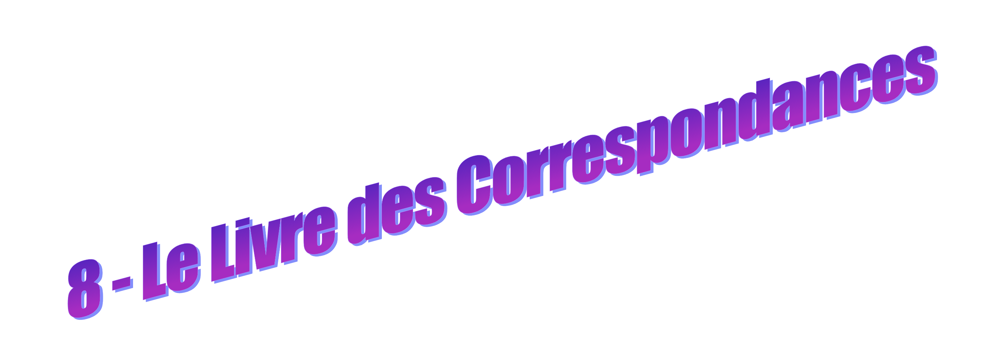
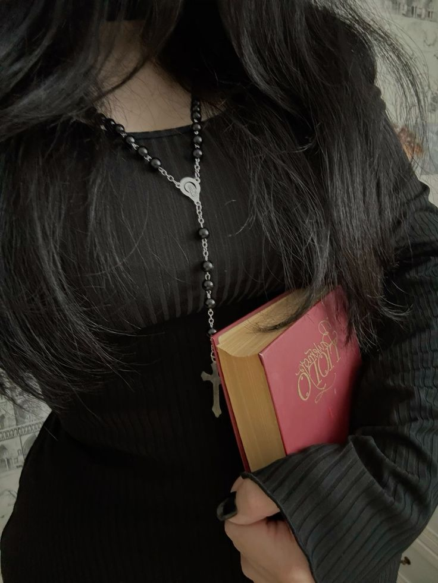
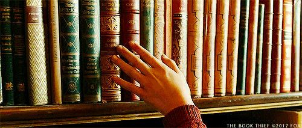

Emma serre encore le livre des correspondances contre elle, déjà convaincue. Aude fourre son nez dans un encens japonais, Soline fait tournoyer un pendule au bout de ses doigts comme si elle avait toujours su s’en servir.
La vendeuse finit par s’approcher de toi. Elle ne regarde ni tes mains, ni les livres, ni même ton hésitation visible entre deux tranches de cuir et de papier. Elle te regarde toi, yeux bleus constellés d'écorces d'orange plantées directement dans ton iris craintif.
« Vous êtes venue chercher quelque chose de précis ? » demande-t-elle simplement.
Sa voix n’a rien de théâtral. Pourtant, la question reste en suspens un peu trop longtemps. Puis elle ajoute, comme si ce n’était qu’une précision anodine :
« Ou quelque chose qui fasse écho ? »

Tu sens un léger décalage dans la manière dont elle formule ça. Comme si les mots ne servaient pas exactement à demander une réponse, mais à observer ce qu’ils provoquent. Ce genre de test te met toujours extrêmement mal à l'aise, toi et ta peur d'être jugée, observée, évaluée. Mais il y a quelque chose d'intrigant et de magnétique chez elle. Dans les promesses implicites qu'elle laisse fleurir au coin de ses phrases... Tu ne dis rien et continues de l'observer. Elle incline légèrement la tête, puis retourne à ses rayonnages, comme si la conversation était déjà terminée.
Et pourtant… tu as la sensation étrange que quelque chose vient de bouger en toi, sans que tu saches précisément où et quoi. Silence. Les filles continuent leur petit tour. Tu es restée coite et quiète dans ton coin. Tu attends quelque chose. Tu sens que c'est un de ces moments puissamment pivots dans ta vie, mais tu ne sais pas exactement ce qui peut faire pencher la décision des dieux en ta faveur.
Puis la vendeuse, sans se retourner, ajoute sans préambule :
« C’est curieux… les livres choisissent rarement les gens qui doutent d’eux-mêmes. »
Elle lit dans les pensées ou quoi ? Ca devient vraiment intense là. Les filles n'ont pas tilté. A qui s'adressait cette question ? Tu ne rêves pas, elle s'adressait bien à toi ! Évidemment, la vendeuse ne précise pas de quelles personnes elle parle... ou de quels livres. Elle ne précise rien. Et elle continue de ranger, lentement, imperturbablement. Comme si la question n’avait jamais vraiment attendu de réponse.
Un ange passe, deux anges, trois anges... ton cœur tambourine dans ta poitrine, tes mains deviennent moites... Pourquoi ton corps s'emballe à ce point ? Tu réalises que tu as peut-être répondu sans vraiment répondre. Et que sa question, en réalité, n’était peut-être pas formulée pour être comprise immédiatement. A ce moment précis, tu te tournes vers elle, tu n'es pas certaine qu'elle t'ait regardée avant, mais maintenant c'est le cas.
La femme blonde ne vous presse pas. Elle vous observe placidement,
comme si le temps à l’intérieur de la boutique ne s’écoulait pas
tout à fait au même rythme qu’à l’extérieur.
« C’est curieux… les livres choisissent rarement les gens qui doutent d’eux-mêmes. »
Que réponds-tu ?
